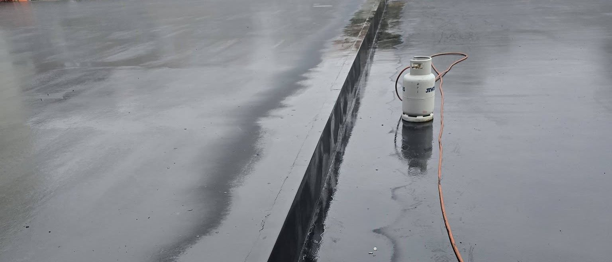

Robimy jedną rzecz i robimy ją dobrze
SK Hydro Protect zajmuje się dachami płaskimi oraz hydroizolacją. Bez dachówki, bez więźby, bez dodatkowych usług doklejanych do zlecenia.
Materiały systemowe, nie przypadkowe
W jednym pokryciu wszystko musi do siebie pasować: papa podkładowa do wierzchniej, klej do membrany, listwa dociskowa do obróbki. Mieszanie materiałów z różnych systemów bywa tańsze na fakturze i droższe po trzech sezonach, kiedy połączenie zaczyna puszczać.
Pracujemy na papie termozgrzewalnej, membranach EPDM, PVC, TPO i FPO oraz na płynnych powłokach PU i PMMA. To daje możliwość wyboru rozwiązania pod konkretny dach, zamiast dopasowywania dachu do jedynej technologii, jaką się zna.

Wąska specjalizacja zamiast pełnej listy usług
Dach płaski wybacza mniej niż skośny. Nie ma spadku, który sam zdejmie wodę, więc każdy błąd przy obróbce zostaje na miejscu i czeka na pierwszą dłuższą ulewę. Firma, która kryje dachówką, a płaskie robi raz na kwartał, poznaje te zależności bardzo powoli.
Dlatego zawęziliśmy zakres. Kładziemy papę i membrany, izolujemy tarasy i balkony, naprawiamy to, co przecieka. Dzięki temu po wejściu na dach wiemy, gdzie zajrzeć najpierw, i potrafimy powiedzieć, czy naprawa ma szansę się obronić, czy tylko przesunie problem o rok.

Cztery zasady przy każdym zleceniu
Otwarty dach zamykamy przed nocą
Zakres, jaki zdejmujemy danego dnia, planujemy tak, żeby do wieczora wrócił pod warstwę zabezpieczającą. Prognoza opadów jest dla nas częścią harmonogramu, a nie ciekawostką, bo jedna nieprzykryta noc potrafi zamoczyć ocieplenie na całej połaci.
Porozmawiajmy o Twoim dachu
Najkrótsza droga to telefon. Powiedz, co się dzieje na dachu, a umówimy termin oględzin.